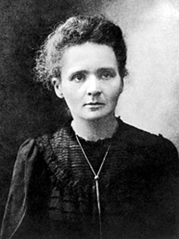

มารี กูรี (Marie Curie):

มารี กูรี เป็นนักวิทยาศาสตร์ชาวโปแลนด์ เกิดเมื่อวันที่ 7 พฤศจิกายน ค.ศ. 1867 (พ.ศ. 2410) และเสียชีวิตเมื่อวันที่ 4 กรกฎาคม ค.ศ. 1934 (พ.ศ. 2477) ในวัย 66 ปี ซึ่งเรียกได้ว่าเธอเป็นผู้หญิงเก่งแห่งยุคคนหนึ่งเลยทีเดียว เพราะในขณะที่ผู้หญิงส่วนใหญ่ในยุคสมัยของเธอไม่ได้รับการศึกษาหรือโอกาสเท่าเทียมกับผู้ชายนัก เธอกลับมุ่งมั่นศึกษาค้นคว้าจนกระทั่งค้นพบรังสีเรเดียมที่สามารถยับยั้งการขยายตัวของโรคมะเร็งได้ในที่สุด จนเป็นผลให้เธอได้รับรางวัลโนเบลยิ่งไปกว่านั้น นอกจากความเฉลียวฉลาดของเธอแล้ว การอุทิศตัวให้สังคมของเธอก็ยังทำให้หลาย ๆ คนประทับใจอีกด้วย เพราะเธอเลือกที่จะไม่จดสิทธิบัตรสิ่งที่เธอค้นพบซึ่งจะทำให้เธอกลายเป็นเศรษฐีได้สบาย ๆ แต่กลับเลือกอุทิศตัวเพื่อส่วนรวมและค้นคว้าต่อไปจนกระทั่งเสียชีวิตจากการใกล้ชิดรังสีเรเดียมมากเกินไปในที่สุด